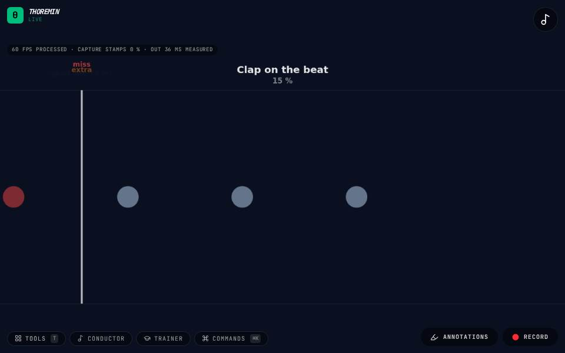

Play Along Lessons

What to do
- Allow the microphone, choose a lesson and press Start.
- Clap, tap the table or play each note as it reaches the line.
- Each hit says perfect, great or good, and whether you were early or late.
A note highway that listens. The rhythm lessons need no pitch: clap or tap them. The melody lessons ask for the right note too, sung, hummed or played on any instrument.
How it works
Notes travel toward the line on the left. The game hears every clap, tap or note start and compares its time with the note's: within 30 thousandths of a second is perfect, 60 great, 100 good (wider on easy, tighter on hard). A sound where no note is due counts as an extra. At the end it tells you whether you tend to rush or drag, and by how much.
In a melody lesson the pitch you play just after each note starts must be the note (any octave), or it is a wrong note.
Only the count-in clicks: a metronome during the lesson would be heard by the microphone as claps. Measure your timing once with Audio timing in the same section so the judging is fair on your device.
Settings
Listening games in the editor: the game, the lesson, the difficulty and transposing, Start and Stop, and the timing take.
Its settings: Listening games. Every knob: the manual.